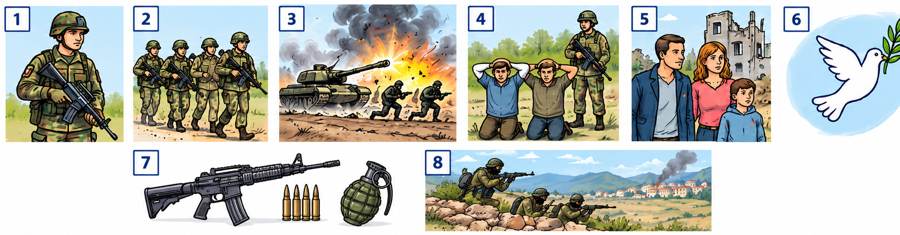
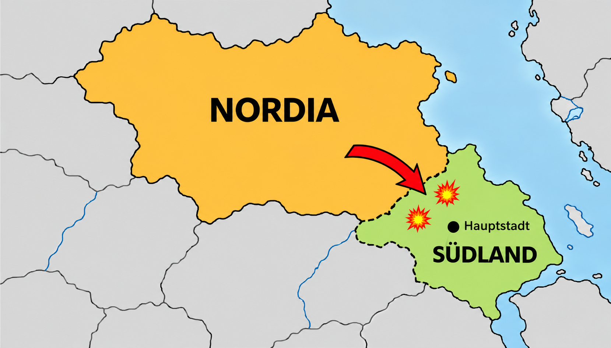

Krieg und Frieden
Wortschatz und Leseverstehen · Niveau A2
Schauen Sie sich die Bilder genau an.
Betrachten Sie die Illustrationen und die Karte. Welche Begriffe zum Thema Krieg und Frieden kennen Sie bereits? Bearbeiten Sie danach die drei Übungen.

Der Konflikt zwischen Nordia und Südland
Nordia und Südland sind zwei erfundene Länder. Auf der Karte ist Nordia größer als Südland. Die Geschichte in Aufgabe 3 ist ebenfalls erfunden.

A · Bilder und Wörter
Schauen Sie sich die Bilder an. Ergänzen Sie die Sätze mit den passenden Wörtern aus der Wortliste. Jedes Wort passt einmal.
B · Der Konflikt zwischen Nordia und Südland
Lesen Sie den Text. Ergänzen Sie die Lücken mit den Verben aus der Wortliste. Setzen Sie die Verben in die richtige Form. Wählen Sie jeweils die passende Verbform aus dem Dropdown-Menü.
C · Wichtige Begriffe
Ergänzen Sie die Sätze mit den passenden Wörtern. Jedes Wort passt einmal.